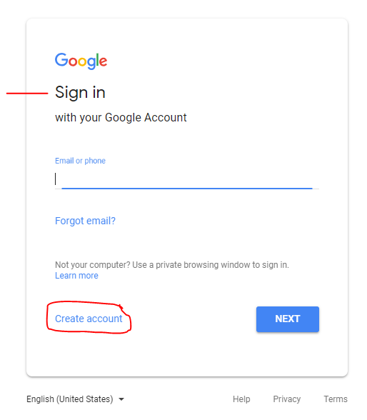
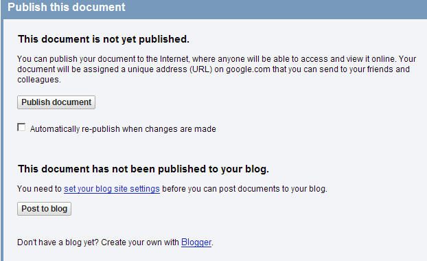
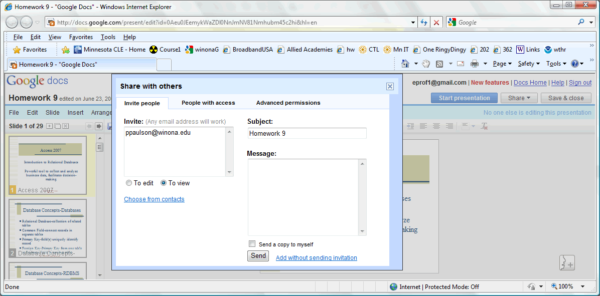
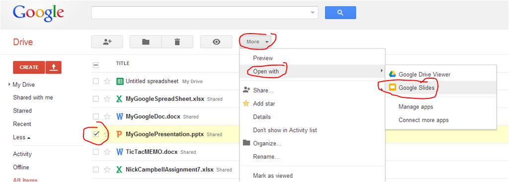

This assignment introduces cloud based applications and virtualization. You are encouraged to explore on your own to find additional features that will make your life and present or future jobs easier. After completing this assignment you will be able to use a cloud application and virtualization to
The exercises in this assignment should be done in the order presented in the Cloud Applications and Virtualization sections.
The purpose of this assignment is to learn how businesses and other entities are making use of 'cloud computing' and adopting virtualization technology. You can use cloud or web based software to accomplish many of the same tasks that you can with desktop software (remember Microsoft Office?). So why move to the cloud? Your applications are available from multiple computers and devices (tablets, smart phones, laptops). The cost is less-perhaps free. Software updates are no longer a hassle. The main downside is that cloud applications may not have all the bells and whistles (functionality) of massive desktop application.
Virtualization comes in many forms. We will examine operating system virtualization. But you can also virtual applications and storage. Virtualization is a way to save time and money, check software updates quickly before they are rolled out, provide sand boxed environments, among other things.
Some other thing to consider are:
Sign up for a Google Drive account, if you do not already have one.. 
For this exercise you must upload or create a document, a spreadsheet and a presentation using GoogleDocs. Feel free to use files from prior assignments, such as your resume, a presentation or a spreadsheet. Or create new ones. When done publish the document to the Internet, and then Share it to make itaccessible by Professor Paulson. Use my "ppaulson@winona.edu" email address shown below.  Check the 'To view' radio button because I only need to view and not need to edit your pages. 
Take a screen shot of each Google file created below.
Note: In a web browser the urls in the address bar will look something like: https://docs.google.com/present/edit?id=0Aeu0JEemykWaZDl0NnJmNV81Nmhubm45c2hi&hl=en)
SampleGoogleDoc
You are going to learn to embed a Google Presentation into an html file. Please read this entire exercise before beginning
Note: if you uploaded a PowerPoint file to Google Docs, you must first convert it to a Google Slide format before proceeding:

Refer to File>Publish to the Web... and follow the instructions. Choose an appropriate size.
(100) 4. Make a screen shot showing your Google Presentation Embed Code. Save the screen shot as "Ex2" in your ' ' folder.
Create a Google Document Spreadsheet that uses the GoogleFinance function to find the share prices and number of shares outstanding for the following stocks:
GOOG-Google IBM- F-Ford MSFT-Microsoft GRPN-Groupon AAPL-Apple
Based on the information you collected, determine which of these stocks has the largest market capitalization.
(100) 5. Create a set of formulas in your spreadsheet to determine the market capitalization of each stock. Answer the following question: Which company has the largest market capitalization, and what is the current market capitalization, in dollars ?
From the menu choose View>All formulas and display formulas, not values.
(100) 6. Make a screen shot showing your Google Spreadsheet displaying formulas (View>All formulas), not values. Save the screen shot as "Ex3" in your ' ' folder.
Review Virtualization on Windows.
Watch the beginning of this video for an overview of the VMware vSphere system. Virtualization Basics.
(50) 7. What is a benefit to a business of using virtual machines? Ref: http://en.wikipedia.org/wiki/Virtual_machine
(300)8. Make a screen shot of any part of a LinkedIn learning course or video on virtualization. Save the screen shot as "Ex4" in your ' ' folder.
Use a web browser to verify that you have published your website to https://classes.winona.edu/... Check that your name, StarID, email, class, semester, section and all of your answers are correct and visible. From the menu choose File>Print... and using "Microsoft Print to PDF" save a copy of this assignment as a .pdf file in your ' ' folder.
(50) 9. Save your file 'WebPage.pdf' to the ' ' folder.
Create a .pdf file named 'screenshots.pdf' by combining the above screenshots.
Screenshots
Screenshots.pdf
Ctrl + V
(50) 10. Save your file 'ScreenShots.pdf' to the ' ' folder.
Use PDFill or PDF Preview(Mac) to merge the WebPage.pdf file with the ScreenShots.pdf file, and save it as 'Summative08.pdf' in ' ' folder.
(50) 11. Upload your file 'Summative08.pdf' to the D2L 'Summative08' Assignment folder.
Use a browser to view your completed and published website at: https://classes.winona.edu/... Ensure that you have linked this assignment on your home page. Note that your screen shots do not have to be completed to perform this step.